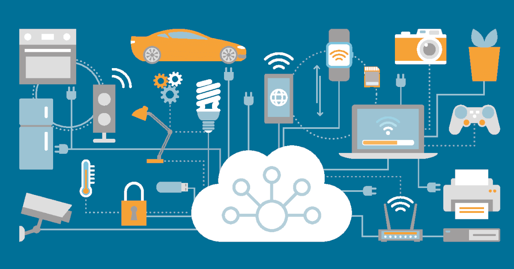
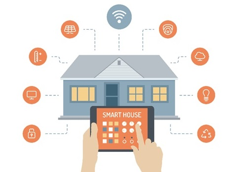

스마트 연결의 미래: 사물인터넷(IoT)의 세계 |
||
"사물인터넷(IoT), 우리가 사는 세상을 어떻게 변화시키고 있을까?" |
||
| 우리는 이미 수많은 사물이 인터넷을 통해 서로 연결된 세계에 살고 있다. 사물인터넷, 즉 IoT는 일상생활의 거의 모든 물체를 스마트 기기로 바꾸어, 다양한 기기가 실시간으로 데이터를 주고받으며 사용자에게 더 나은 편의와 효율성을 제공한다. IoT의 가장 큰 매력은 생활 속에 자연스럽게 녹아들어 있다는 점이다. 스마트폰으로 집 안의 조명을 켜고, 집에 있는 냉장고가 스스로 신선도를 체크하여 식료품을 주문하는 일상이 이미 현실이 된 지금, IoT는 단순한 기술이 아니라 현대인의 라이프스타일로 자리 잡았다. |
 |
|
"산업을 혁신하는 IoT: 다양한 적용 사례" |
||
 |
1. 스마트 홈:
집 안의 모든 가전 제품이 스마트폰과 연결되어 원격으로 조작할 수 있는 스마트 홈은 IoT의 대표적인 활용 사례다. 에어컨, 조명, 보안 시스템은 물론 심지어 커피 머신까지 한 번에 제어할 수 있다. 스마트 가전 제품이 주는 편리함은 물론, 에너지 절약에도 큰 도움을 준다. |
2. 헬스케어:
IoT는 헬스케어 분야에서도 혁신을 일으키고 있다. 스마트워치나 헬스 모니터링 기기는 사용자의 건강 데이터를 실시간으로 분석해 의료진과 정보를 공유하고, 건강 상태를 모니터링하며, 질병을 조기에 감지하는 역할을 한다. 이는 개인 맞춤형 의료 서비스가 점차 대중화되는 데 크게 기여하고 있다. |
| 3. 자율주행 차량:
자율주행 기술 역시 IoT의 핵심 기술 중 하나다. 자동차가 실시간 교통 정보를 받아 경로를 계산하고, 도로 상황에 따라 안전하게 운행하는 자율주행 시스템은 IoT 없이는 불가능하다. 대한민국의 현대자동차가 최근 선보인 자율주행 차량은 IoT를 기반으로 차량 내부와 외부의 데이터를 분석해 안전성을 크게 향상시켰다. |
4. 스마트 시티:
스마트 시티는 도시 전체를 하나의 거대한 IoT 시스템으로 만들어, 교통, 에너지, 환경 등 도시 생활의 다양한 요소를 효율적으로 관리하는 시스템이다. 서울시는 스마트 교통 시스템을 통해 실시간으로 교통 상황을 파악하고, 혼잡도를 줄이는 데 성공적인 결과를 보이고 있다. |
|
"IoT의 미래, 어디로 향하고 있을까?" |
||
| 사물인터넷은 우리가 상상하는 것 이상의 미래를 실현할 잠재력을 지니고 있다. 특히 5G와 더불어 6G 네트워크 기술의 도입은 IoT 기기들 간의 연결을 더욱 촘촘하게 만들어, 상상 이상의 혁신을 가능하게 할 것이다. 다음은 IoT가 향후 발전할 몇 가지 주요 영역이다. |
스마트 공장에서는 IoT가 생산 기기 간의 실시간 소통을 통해 자율적으로 작업을 최적화하고, 예측 유지보수로 기계 고장을 사전에 예방할 수 있다. 이로 인해 생산성은 극대화되고 비용 절감 효과가 발생할 것이다. 또한, 작업자는 더 창의적이고 고부가가치 업무에 집중할 수 있는 환경이 조성될 것이다. | 헬스케어 분야에서는 IoT 웨어러블 기기가 환자의 건강 상태를 실시간으로 모니터링하여 맞춤형 의료 서비스를 제공하게 된다. 원격 진료와 AI 기반 건강 관리 시스템은 특히 의료 서비스가 부족한 지역에서 큰 변화를 이끌어낼 것이다. 개인의 건강 데이터가 실시간으로 의료진에게 전달됨으로써 질병 예방과 조기 진단이 더 용이해질 것이다. |
| 스마트 농업은 IoT를 통해 작물의 성장 조건을 자동으로 관리하고, 드론을 이용해 농작물 상태를 모니터링하는 기술이 자리 잡을 것이다. 이는 농업 생산성을 크게 향상시키고 자원을 효율적으로 사용할 수 있게 도울 것이다. 한국의 스마트 농업 기술은 이미 이러한 방향으로 빠르게 발전하고 있다. | AI와 IoT의 결합은 더욱 스마트한 의사결정을 가능하게 한다. AI는 IoT가 수집한 데이터를 실시간으로 분석하여 즉각적인 결정을 내리고, 이를 통해 자율주행, 제조, 의료 등 다양한 분야에서 효율성을 극대화할 것이다. 이처럼 IoT는 AI와 함께 새로운 산업 생태계를 창출할 것이다. | |
| 사물인터넷은 이미 우리의 삶을 바꾸어 놓았고, 앞으로 더 큰 변화를 예고하고 있다. 이 기술이 제공하는 다양한 가능성을 어떻게 활용하느냐에 따라 우리의 미래는 크게 달라질 것이다. | ||